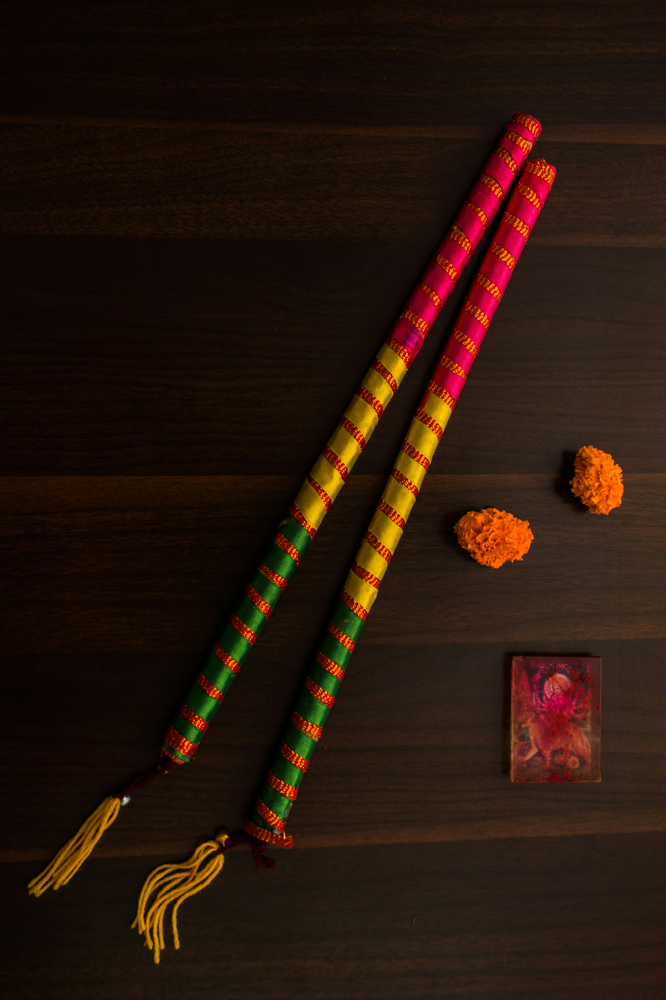

Navratri, a festival dedicated to the worship of the Hindu deity Durga, spans nine nights (and ten days) and is celebrated every year in the autumn. It is one of the most celebrated festivals of Hindu culture. The name 'Navratri' means 'nine nights' in Sanskrit, nava meaning nine and ratri meaning nights. During these nine nights and ten days, nine forms of the goddess Durga are worshipped.
The festival is observed for different reasons and celebrated differently in various parts of India. In the North, it is celebrated as the victory of Rama over Ravana, while in the East and Northeast, it is synonymous with Durga Puja, signifying the victory of Durga over Mahishasura. Elsewhere, it marks the victory of good over evil and the arrival of the harvest season.
Each day of Navratri is dedicated to an incarnation of Durga. Maa Shailputri is worshipped on the first day, Brahmacharini on the second, Chandraghanta on the third, and so on, with each day having its own significance and ritual.
Navratri celebrations include stage decorations, recital of the legend, enacting of the story, and chanting of the scriptures of Hinduism. The nine days also see a major crop season cultural event, such as competitive design and staging of pandals, a family visit to these pandals, and the public celebration of classical and folk dances of Hindu culture.